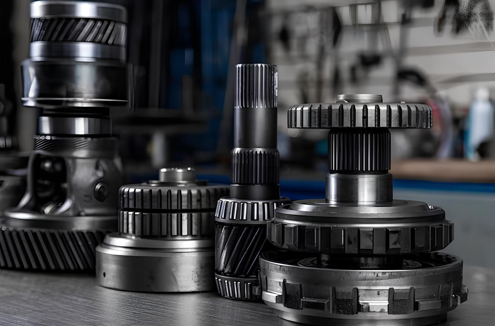

Собственный склад запчастей для автоматических
квалифицированные персонал
С нами работают самые крупные сервисы Москвы и регионов
Отправка сдэк и деловые линии в день обращения
Скидки постоянным клиентам
подобрать запчасти
Компания TRT
Ваш надежный источник запчастей для автоматических коробок передач, роботов и вариаторов. Мы на рынке с 2015 года и за это время успели завоевать доверие миллионов клиентов, предоставляя высококачественные компоненты и услуги.
Продукция
б/у запчасти
подобрать запчастиновые запчасти
подобрать запчастиПокупаем неисправные автоматические коробки передач
в любом состоянии
предложить
O компании
TRT — надёжный поставщик запчастей для АКПП в Москве и по всей России.
С 2015 года мы специализируемся на продаже новых и б/у деталей для АКПП, роботизированных трансмиссий и вариаторов. В нашем интернет-магазине вы можете купить запчасти для АКПП любых марок — быстро, удобно и с гарантией качества. Мы предлагаем широкий ассортимент комплектующих, профессиональную консультацию и оперативную доставку по всей стране.
Интернет-магазин TRT — это миллионы доступных позиций и быстрая доставка.
Если вы ищете запчасти для АКПП в Москве, редкие или востребованные позиции всегда есть в наличии или под заказ. Мы поможем вам подобрать необходимые детали для АКПП, обеспечим надежную упаковку и отправим заказ в кратчайшие сроки удобной транспортной компанией.

Ответы на частые вопросы
В нашем каталоге вы найдете широкий ассортимент запчастей для автоматических коробок передач (АКПП) различных марок — фрикционы, ремкомплекты, гидроблоки, соленоиды, насосы, валы, планетарки и другие комплектующие для ремонта и обслуживания АКПП. Предлагаем как новые, так и контрактные (б/у) детали.
Да, мы специализируемся на запчастях для популярных вариаторов, включая модели Jatco (JF011E, JF015E, JF016E) и другие. У нас можно купить ремни, конуса, подшипники, ремкомплекты и другие детали для ремонта вариаторов Nissan, Mitsubishi, Renault и других марок.
Мы предлагаем полный ассортимент деталей для роботизированных коробок (DSG, AMT и другие) — вилки, валы, насосы, блоки управления, дифференциал, сцепления и другие позиции. Все запчасти доступны для заказа как для легковых автомобилей, так и для коммерческого транспорта.
Да, мы поставляем оригинальные и аналоговые запчасти для вариаторов Jatco JF015E, JF016E, JF011E. В наличии и под заказ — полный спектр комплектующих для ремонта этих популярных вариаторов.
В ассортименте есть не только запчасти для легковых автомобилей, но и для коммерческого транспорта и спецтехники. Например, вы можете приобрести запчасти для АКПП погрузчиков (FD30N, NSG370, 6hp502 и другие), а также других типов техники.
Да, мы поставляем запчасти для АКПП Aisin (включая 09G, AL4, DP0). У нас доступны как новые, так и контрактные детали. Также вы можете заказать необходимые позиции для других моделей Aisin.
Да, мы работаем как с розничными клиентами, так и с СТО, автомастерскими, автосервисами и магазинами автозапчастей. Для оптовых покупателей предусмотрены специальные условия и скидки.
Конечно! Вы можете оформить заказ прямо на сайте, через наш магазин на Avito (просто нажмите на значок Avito на сайте), а также через мессенджеры. Мы отправляем запчасти по всей России, включая крупные города и удалённые регионы. Доставка осуществляется транспортными компаниями СДЭК и Деловые Линии.
Да, на все новые запчасти предоставляется гарантия. На контрактные и восстановленные детали также действует гарантийный срок, который зависит от конкретной позиции. Перед покупкой наши менеджеры обязательно уточнят условия.
Да, наши специалисты помогут вам с подбором. Достаточно сообщить VIN автомобиля, марку, модель и год выпуска — мы подберем совместимые запчасти для вашей АКПП, вариатора или роботизированной коробки.